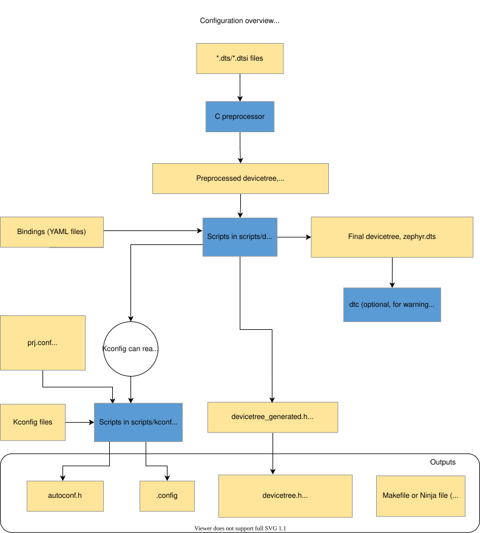
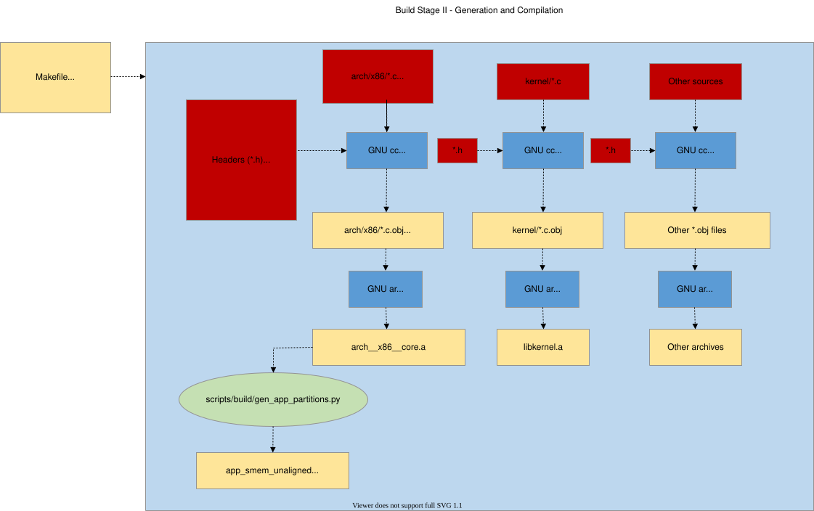
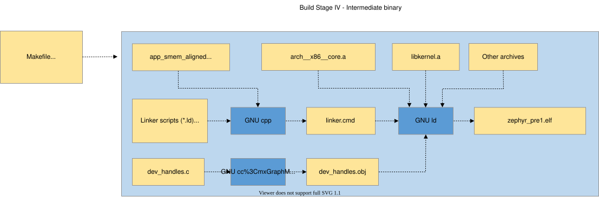
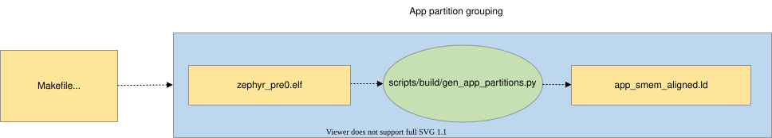
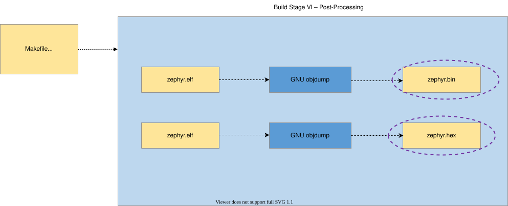

构建系统（CMake）
CMake 用于将应用程序与 Zephyr 内核一起构建。CMake 构建分两个阶段进行。第一个阶段称为 配置。在配置期间，会执行 CMakeLists.txt 构建脚本。配置完成后，CMake 内部就有了一个 Zephyr 构建的模型，并能生成主机平台原生的构建脚本。
CMake 支持为多种构建系统生成脚本，但 Zephyr 只测试并支持 Ninja 和 Make。配置完成后，执行生成的构建脚本即开始 构建 阶段。在大多数代码修改之后，这些构建脚本无需 CMake 参与即可重新编译应用程序。不过，在某些修改之后，必须在构建前重新执行配置步骤。构建脚本可以检测到其中一些情况并自动重新配置，但有些情况必须手动完成。
Zephyr 使用 CMake 的“目标（target）”概念来组织构建。目标可以是可执行文件、库或生成的文件。对于应用程序开发者来说，最需要理解的是库目标。进入 Zephyr 构建的所有源代码（包括应用程序代码）都是通过被包含在某个库目标中而参与构建的。
库目标拥有源代码，这些源代码通过 CMakeLists.txt 构建脚本添加，如下所示：
target_sources(app PRIVATE src/main.c)
在上面的 CMakeLists.txt 中，一个名为 app 的现有库目标被配置为包含源文件 src/main.c。PRIVATE 关键字表示我们修改的是该库自身的构建方式。使用 PUBLIC 关键字则会修改与 app 链接的其他库的构建方式。在本例中，使用 PUBLIC 会使与 app 链接的库也包含源文件 src/main.c，这显然不是我们想要的。不过，在修改目标库的包含路径时，PUBLIC 关键字可能会很有用。
在使用 CMake 引入构建系统代码或添加新的 CMake 文件时，请遵循 此处 列出的风格指南。
CMake 参考 一节提供了 Zephyr 使用且可供应用程序开发者使用的所有 CMake 命令、变量和模块的参考。
构建与配置阶段
Zephyr 构建过程可分为两个主要阶段：配置阶段（由 CMake 驱动）和构建阶段（由 Make 或 Ninja 驱动）。
配置阶段
当用户调用 CMake 生成构建系统，并指定源应用程序目录和开发板目标时，配置阶段就开始了。


CMake 首先处理应用程序目录中的 CMakeLists.txt 文件，该文件引用 Zephyr 顶层目录中的 CMakeLists.txt 文件，后者又（直接和间接地）引用整个构建树中的 CMakeLists.txt 文件。其主要输出是一组驱动构建过程的 Makefile 或 Ninja 文件，但 CMake 脚本自身也会做一些处理，下面对此进行说明。
注意，下文中以 build/ 开头的路径指的是运行 CMake 时创建的构建目录。
- 设备树
从目标的架构、SoC、开发板和应用程序目录中收集
*.dts（设备树源文件）和*.dtsi（设备树源包含文件）文件。*.dtsi文件通过 C 预处理器（常缩写为 cpp，不要与 C++ 混淆）被*.dts文件包含。C 预处理器还用于合并所有设备树*.overlay文件，以及展开*.dts、*.dtsi和*.overlay文件中的宏。预处理器的输出放在build/zephyr/zephyr.dts.pre中。预处理后的设备树源文件由 gen_defines.py 解析，生成包含预处理器宏的头文件
build/zephyr/include/generated/zephyr/devicetree_generated.h。源代码应通过包含 devicetree.h 头文件来访问由设备树生成的预处理器宏，该头文件会包含
devicetree_generated.h。gen_defines.py还会将最终的设备树写入构建目录中的build/zephyr/zephyr.dts。该文件的内容可能有助于调试。如果安装了设备树编译器
dtc，会对build/zephyr/zephyr.dts运行它，以捕获该工具产生的额外警告和错误。除此之外不使用dtc的输出，如果未安装dtc，则跳过这一步。以上只是简要概述。有关设备树的更多信息，请参阅 设备树指南。
- Kconfig
Kconfig文件定义了目标架构、SoC、开发板和应用程序可用的配置选项，以及选项之间的依赖关系。Kconfig 配置保存在 配置文件 中。初始配置由开发板和应用程序的配置片段（例如
prj.conf）合并生成。Kconfig 的输出是一个包含预处理器赋值的头文件
autoconf.h，以及一个.config文件，后者既是已保存的配置，也是（供 CMake 使用的）配置输出。autoconf.h中的定义会在编译时自动生效，因此无需包含该头文件。通过 kconfigfunctions.py 中定义的函数，Kconfig 可以获取设备树中的信息。
更多信息请参阅 手册中的 Kconfig 一节。
构建阶段
当用户调用 make 或 ninja 时，构建阶段就开始了。其最终输出是一个完整的 Zephyr 应用程序，格式适合加载/烧录到目标开发板上（zephyr.elf、zephyr.hex 等）。从概念上讲，构建阶段可分为四个步骤：预构建、第一遍二进制文件、最终二进制文件和后处理。
预构建
预构建发生在编译任何源文件之前，因为在这一阶段会生成源文件所使用的头文件。
- 构建时常量生成
有些常量必须在构建时从 C 结构体布局推导得出，而不能硬编码。CMake 函数
zephyr_constants_library()可自动完成这一过程：它将一个包含GEN_ABSOLUTE_SYM()声明的 C 源文件编译成一个 OBJECT 库，然后运行gen_offset_header.py提取以_OFFSET或_SIZEOF结尾的符号，并将它们以#define行的形式写入include/generated/zephyr/下生成的头文件中。该机制用于两个地方：
offsets.h：架构专用的偏移量，供需要访问高层数据结构、但无法直接获得这些结构定义的汇编代码使用。源文件是
arch/<arch>/core/offsets/offsets.c。heap_constants.h：根据实际的堆结构体布局计算出的堆大小常量（
Z_HEAP_MIN_SIZE、Z_HEAP_MIN_SIZE_FOR），取代了kernel.h中以前硬编码的值。源文件是lib/heap/heap_constants.c。
要添加新的构建时常量，请创建一个包含
<gen_offset.h>的 C 源文件，用GEN_ABSOLUTE_SYM()声明每个常量，然后在CMakeLists.txt中调用zephyr_constants_library()。如果新库的源文件包含了由另一个常量库生成的头文件，请使用DEPENDS参数声明这种先后顺序（例如DEPENDS heap_constants）。生成的 OBJECT 库也可以链接到最终的二进制文件中（就像 offsets.h 在链接脚本中通过$<TARGET_OBJECTS:offsets>所做的那样）。- 系统调用样板代码
gen_syscalls.py 和 parse_syscalls.py 两个脚本协同工作，将可能的系统调用函数与其实现绑定起来。

中间二进制文件
真正的编译从第一个中间二进制文件开始。从各个子系统（具体是哪些子系统由配置阶段决定）收集源文件（C 和汇编），并将其编译成归档文件（编译时会引用源代码树中的头文件，以及在配置阶段和预构建阶段生成的头文件）。


中间二进制文件的确切数量在配置阶段决定。
如果启用了内存保护，则：
- 分区分组
gen_app_partitions.py 脚本扫描所有生成的归档文件，并输出链接脚本，以确保应用程序分区按照目标的内存保护硬件正确分组和对齐。
然后使用 cpp 将来自目标架构/SoC、内核源代码树、（启用内存保护时的）分区输出，以及配置过程中选定的任何其他片段的链接脚本片段合并成一个 linker.cmd 文件。随后按 linker.cmd 的指定，使用 ld 链接编译好的归档文件。

- 固定大小的二进制文件
当启用 用户模式 或使用生成的 IRQ 表（
CONFIG_GEN_ISR_TABLES）时，会生成固定大小的中间二进制文件。它生成的二进制文件中各部分大小是固定的，因此在中间二进制文件和最终二进制文件之间，大小不得改变。


中间二进制文件的后处理
上一阶段得到的二进制文件是不完整的，其中有空的和/或占位的段，本质上必须通过反射来填充。
为完成构建过程，会对中间二进制文件执行以下脚本，以生成最终二进制文件所需的缺失部分。
当启用 用户模式 时：
- 分区对齐
gen_app_partitions.py 脚本扫描非固定大小的二进制文件，并生成一个应用共享内存对齐的链接脚本片段，其中各分区按降序排序。


当使用 设备树 时：
- 设备依赖关系
gen_device_deps.py 脚本扫描非固定大小的二进制文件，以确定根据设备树数据记录的设备之间的关系，并将编码后的关系替换为经过优化的值，以便定位应用程序中实际存在的设备。

- 当启用
CONFIG_GEN_ISR_TABLES时： gen_isr_tables.py 脚本扫描固定大小的二进制文件，并创建一个包含硬件向量表和/或软件 IRQ 表的 isr_tables.c 源文件。

当启用 用户模式 时：
- 内核对象哈希
gen_kobject_list.py 扫描 ELF DWARF 调试数据，找出所有内核对象的地址。这个列表被传给 gperf，由它生成这些地址的完美哈希函数和哈希表，然后由 process_gperf.py 利用这一特殊场景的已知特性对其输出进行优化。

如果不需要对中间二进制文件进行后处理，则第一个中间二进制文件会直接用作最终二进制文件。
最终二进制文件
上一阶段得到的二进制文件是不完整的，其中有空的和/或占位的段，本质上必须通过反射来填充。
重复执行上一阶段的链接，这一次会填入缺失的部分。

后处理
最后，如有必要，将完成的内核从 ELF 格式转换为目标所需的加载器和/或烧录工具所期望的格式。这一步可以直接用 objdump 完成。


辅助脚本和工具
下面详细介绍构建过程中使用的脚本。
scripts/build/gen_syscalls.py
用于生成系统调用调用宏的脚本
该脚本解析 parse_syscalls.py 输出的系统调用元数据 JSON 文件，生成以下几个文件：
一个文件，包含所有可能未实现的系统调用的弱别名，以及系统调用分发表，该表将系统调用类型 ID 映射到相应的处理函数。
一个头文件，定义系统调用类型 ID 以及所有系统调用处理函数的函数原型。
一个包含头文件的目录。其中每个头文件对应一个被识别为包含系统调用声明的头文件。这些生成的头文件包含原头文件中每个系统调用的内联调用函数。
scripts/build/gen_device_deps.py
将通用句柄转换为针对应用程序优化的句柄。
不可变的设备数据包含依赖关系信息，例如某个传感器通过特定的 I2C 总线控制，并通过特定 GPIO 控制器上的某个引脚发出事件信号。这些信息在第一遍二进制文件中使用从设备树派生的标识符进行编码。该脚本提取这些标识符，并将其替换为针对实际存在的设备优化过的标识符。
例如，传感器的第一遍句柄可能由其设备树序号 52 定义，I2C 驱动的序号为 24，GPIO 控制器的序号为 14。运行时序号是相应设备在静态设备树数组中的索引，可能分别为 6、5 和 3。
输出是一个 C 源文件，为不可变设备对象所引用的数组内容提供替代定义。在最终链接中，这些定义会取代驱动专用目标文件中的定义。
scripts/build/gen_kobject_list.py
用于生成内核对象元数据 gperf 表的脚本
由于 Zephyr 中的内核/驱动 API 对用户上下文和管理员（supervisor）上下文是相同的，进行系统调用的用户模式线程通过内存地址引用内核对象。内核必须能够验证对内核对象的访问，以确认以下几点：
该内存地址指向一个内核对象
该内核对象的类型符合所调用 API 的预期
该内核对象处于预期的初始化状态
调用线程对该对象具有足够的权限
更多详情请参阅文档中的 内核对象 一节。
Zephyr 构建会生成一个中间 ELF 二进制文件 zephyr_prebuilt.elf，该脚本会扫描此文件，通过检查 DWARF 调试信息查找被视为内核对象的数据结构实例，从而找出内核对象。对于设备驱动，由于它们都是 'struct device'，还会检查构建时填充的 API 结构体指针，以区分不同的设备驱动实例。
该脚本可以生成五种不同的输出文件：
一个 gperf 脚本，用于生成将内核对象内存地址映射到内核对象元数据的哈希表，这些元数据用于跟踪权限、对象类型、初始化状态以及任何对象专用数据。
一个头文件，包含生成的宏，用于在驱动子系统 API 的系统调用处理函数中验证驱动实例。
一个由 kernel.h 包含的代码片段，为每种内核对象类型和每个驱动实例各定义一个枚举常量。
由 kernel/userspace.c 包含的 switch/case C 语句的内部 case 分支，在 otype_to_str() 函数中将内核对象类型和驱动实例映射为人类可读的表示形式。
由 kernel/userspace.c 包含的 switch/case C 语句的内部 case 分支，在 obj_size_get() 函数中将内核对象类型映射为其大小。这用于在运行时分配这些对象的实例（CONFIG_DYNAMIC_OBJECTS）。
scripts/build/gen_offset_header.py
该脚本扫描指定的目标文件，并生成一个头文件，其中定义了表示所找到的各结构体成员偏移量的宏（特别是以 _OFFSET 或 _SIZEOF 结尾的符号），主要供汇编代码使用。
scripts/build/parse_syscalls.py
用于扫描 Zephyr 包含目录并输出系统调用和子系统元数据的脚本
系统调用需要大量样板代码才能完整实现。该脚本是构建系统自动生成这些代码的第一步：它对包含 C 文件或头文件的目录进行文本扫描，建立系统调用及其函数原型的数据库。这些信息会输出到一个生成的 JSON 文件中，供后续处理。
该脚本还会扫描 __subsystem 和 __net_socket 等结构体定义，输出一个 JSON 字典，将标签映射到所有找到的、带有这些标签的结构体声明。
如果输出的 JSON 文件已经存在，会将其内容与该脚本将要输出的信息进行比较；如果结果表明文件不会改变，则不修改该文件，以避免不必要的增量构建。
arch/x86/gen_idt.py
为 x86 CPU 生成中断描述符表。
该脚本为 x86 生成中断描述符表（IDT）。有关此数据结构的更多详情，请查阅 IA 架构软件开发者手册第 3 卷。
该脚本以 zephyr_prebuilt.elf 二进制文件作为输入，它是 Zephyr 内核的一个链接结果，尚未插入各种构建时生成的数据结构（例如 IDT）。该内核镜像已经过适当填充，因此插入这些数据结构不会影响其他符号的内存地址。我们从内核二进制文件中读取一个特殊的段“intList”，其中包含内核所需的中断路由配置，由 IRQ_CONNECT() 宏的各个实例填充。
该脚本输出三个二进制表：
中断描述符表本身。
一个位域，指示 IDT 中哪些向量可用于在运行时安装动态中断。
一个数组，将已配置的 IRQ 线映射到它们在 IDT 中对应的向量条目，用于在运行时对 APIC 编程。
arch/x86/gen_gdt.py
为 x86 CPU 生成全局描述符表（GDT）。
有关 GDT 和 x86 内存管理的更多详情，请查阅 IA 架构软件开发者手册第 3 卷。
该脚本以 zephyr_prebuilt.elf 二进制文件作为输入，它是 Zephyr 内核的一个链接结果，尚未插入各种构建时生成的数据结构（例如 GDT）。该内核镜像已经过适当填充，因此插入这些数据结构不会影响其他符号的内存地址。
输入的内核 ELF 二进制文件用于获取以下信息：
主 TSS 和双重故障（Double Fault）TSS 结构体的内存地址，以便为它们创建 GDT 描述符
GDT 在内存中的地址，以便将该地址填入 GDT 伪描述符
Kconfig 中是否启用了用户空间或硬件栈保护
输出是一个 GDT，其内容取决于内核配置。如果没有启用任何内存保护功能，就生成平坦的 32 位代码段和数据段。如果启用了基于硬件的栈溢出保护或用户空间，还会为主 IA 任务和双重故障 IA 任务创建描述符，这是用户空间特权提升和双重故障处理所必需的。如果启用了用户空间，还会创建用于 ring 3 执行的平坦代码段/数据段。
scripts/build/gen_relocate_app.py
该脚本会将所需文件中的 .text、.rodata、.data 和 .bss 段重定位，并放到所需的存储区域中。存储区域和文件以文件的形式提供给这个 Python 脚本。可以应用正则表达式过滤器，只从文件中选择所需的段。
这种输入文件的内容示例如下:
SRAM2:COPY:/home/xyz/zephyr/samples/hello_world/src/main.c,.*foo|.*bar
SRAM1:COPY:/home/xyz/zephyr/samples/hello_world/src/main2.c,.*bar
FLASH2:NOCOPY:/home/xyz/zephyr/samples/hello_world/src/main3.c,
也可以为给定的存储区域指定程序头：
SRAM2\ :phdr0:COPY:/home/xyz/zephyr/samples/hello_world/src/main.c,
调用该脚本:
python3 gen_relocate_app.py -i input_file -o generated_linker -c generated_code
需要传给该 Python 脚本的配置。
如果存储器是 SRAM1/SRAM2/CCD/AON 这样的类型，则将整个目标文件放入各段中
如果存储器类型后附加了 _DATA / _TEXT / _RODATA / _BSS，则只将所选部分放入所需的存储区域，其余部分忽略。
COPY/NOCOPY 决定脚本是否在 code_relocation.c 中生成重定位代码
NOKEEP 会取消默认行为，即在生成的链接脚本中用 KEEP() 标记每个被重定位的符号。
可以将多个区域附加在一起，例如 SRAM2_DATA_BSS，这会将 data 和 bss 放到 SRAM2 中。
scripts/build/process_gperf.py
gperf C 文件后处理器
我们使用 gperf 为指针值建立完美哈希表。gperf 的做法是创建一个以指针地址的字符串表示为索引的表“wordlist”，然后对传入的字符串调用 memcmp() 进行比较
我们只处理 4 字节的指针值。该脚本会调整生成的代码，使其直接使用指针而不是字符串。这样可以节省相当多的空间。
scripts/build/gen_app_partitions.py
用于生成组织应用程序内存分区的链接脚本的脚本
应用程序可以用 K_APPMEM_PARTITION_DEFINE 声明构建时的内存域分区，并使用 K_APP_DMEM 或 K_APP_BMEM 宏将全局变量分配给这些分区。对于其中每个分区，我们需要将其所有数据放入大小合适、满足内存保护硬件大小/对齐约束的存储区域中。
这个链接脚本在构建过程的很早阶段创建，早于构建尝试链接内核二进制文件之时，因为该工具生成的链接脚本是链接内核的必要前提。我们通过查找被分配到遵循既定命名约定的输入段中的变量，来提取需要生成的内存分区集合。我们还允许通过命令行指令引入整个库，将其全局变量分配给特定的内存分区。
该脚本的输入包括：
查找已编译目标文件的基础目录
键/值对，将静态库文件映射到其全局变量应放入的分区。
输出是一个链接脚本片段，或若干链接脚本生成器片段，其中包含应用共享内存段的定义。对于找到的每个分区，该段会进一步划分为各分区的 data 和 BSS。
scripts/build/check_init_priorities.py
检查初始化优先级
该脚本解析 Zephyr 可执行文件，创建已知设备及其实际初始化优先级的列表，并将其与从设备树层次结构推断出的设备依赖关系进行比较。
这可用于检测初始化顺序错误的设备，以及以相同优先级初始化但彼此依赖的设备，后者在链接顺序改变时可能会出问题。
它还可以选择生成各初始化级别的初始化调用的人类可读列表。